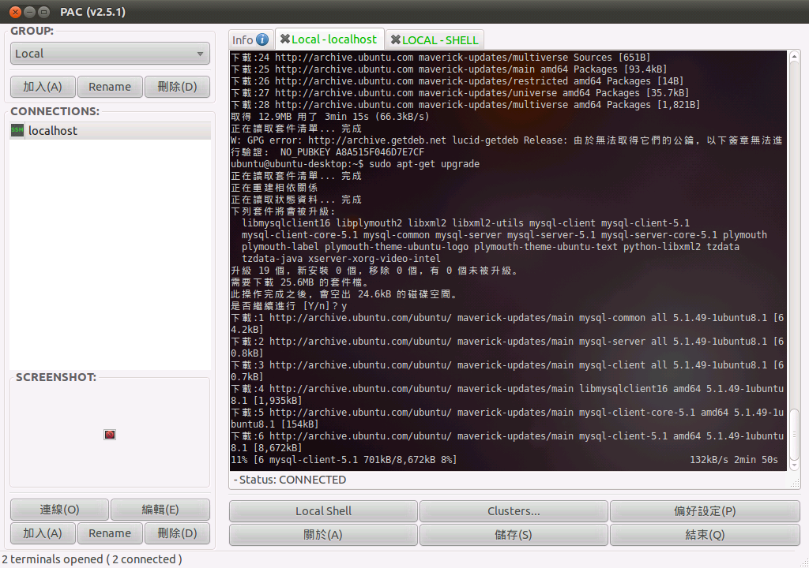
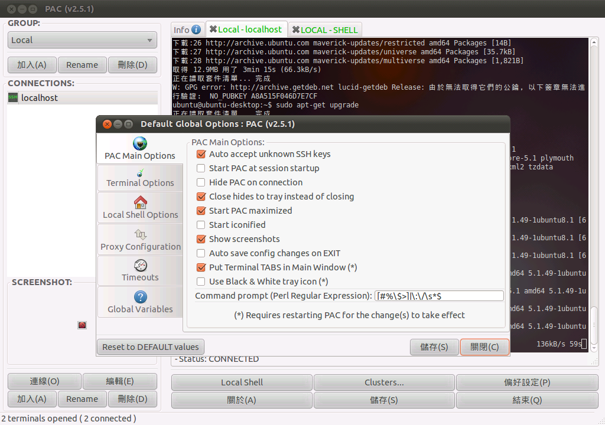
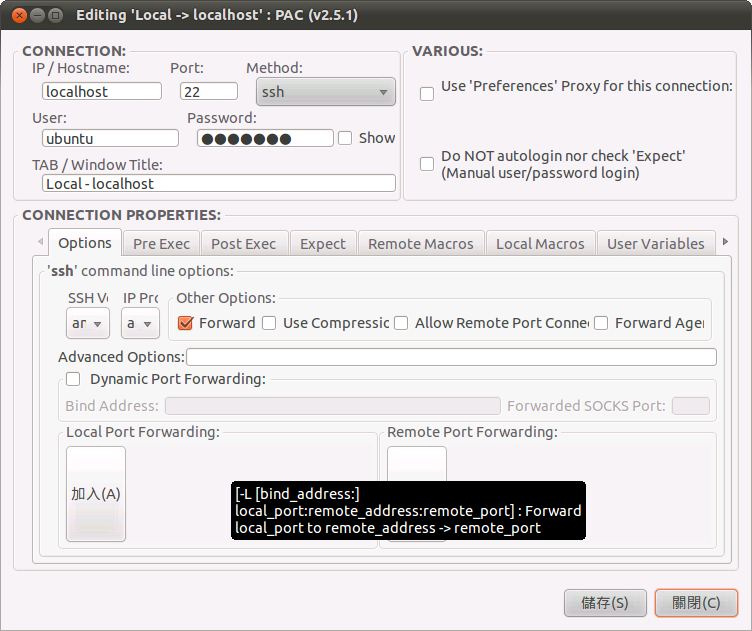
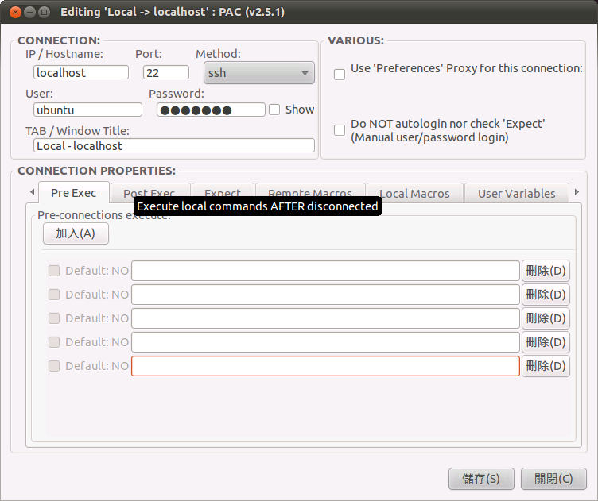
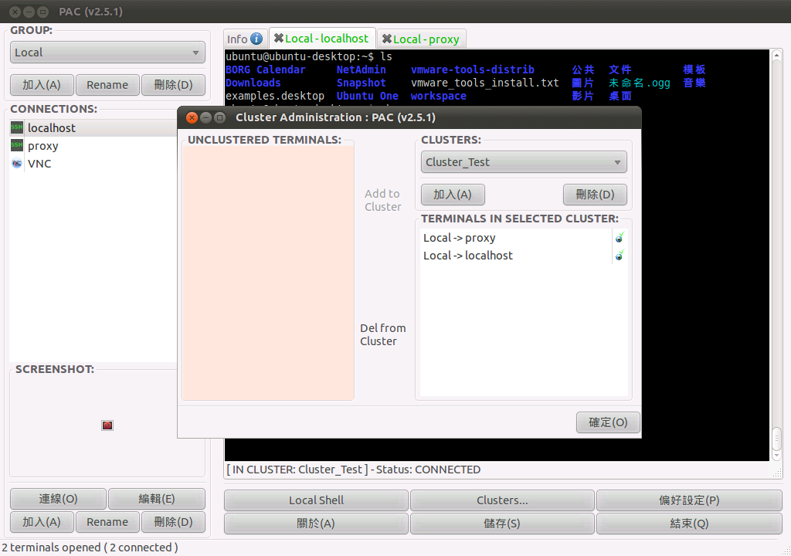
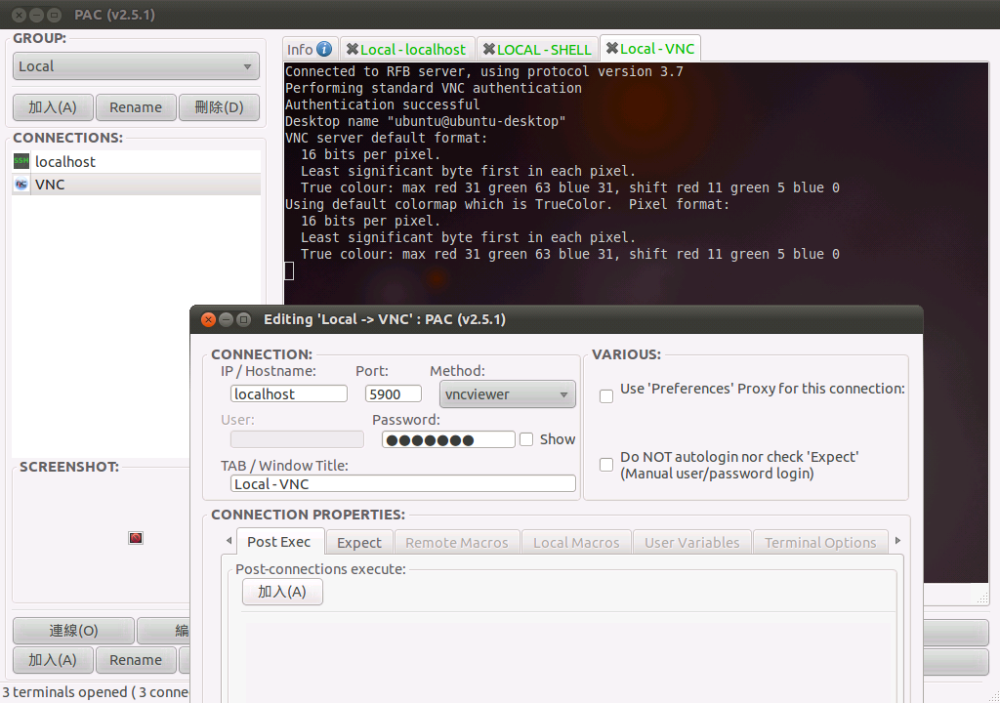

感謝您對「自由軟體鑄造場」的支持與愛護，十多年來「自由軟體鑄造場」受中央研究院支持，並在資訊科學研究所以及資訊科技創新研究中心執行，現已完成階段性的任務。 本網站預計持續維運至 2021年底，網站內容基本上不會再更動。
也紀念我們永遠的朋友 李士傑先生（Shih-Chieh Ilya Li）。
也紀念我們永遠的朋友 李士傑先生（Shih-Chieh Ilya Li）。
FOSS Programs  功能強大的 SSH 連線管理程式 - PAC Manager
功能強大的 SSH 連線管理程式 - PAC Manager
功能強大的 SSH 連線管理程式 - PAC Manager
Created at Thursday, 18 November 2010 18:27 Last Updated on Wednesday, 05 January 2011 22:18
https://sites.google.com/site/davidtv/https://ncu.dl.sourceforge.net/project/pacmanager/pac-2.0/pac-2.5.2-all.tar.gz (443KB)
Debian、Ubuntu 的使用者，可以在 /etc/sources.list（或是 /etc/apt/sources.list）檔案中加入「deb https://archive.getdeb.net/ubuntu lucid-getdeb apps」，再開啟終端機程式依序執行「sudo apt-get update」、「sudo apt-get install pac」即可進行安裝。
簡介
圖形化的操作介面向來是最具親和力的使用介面，也因為如此，現今大多數的 Linux 發行版本預設都會啟用圖形使用者介面。雖然圖形操作介面的便利性無庸置疑，但不可否認的，在 UNIX/Linux 系統的操作上，有時候直接使用文字介面的終端機，登入主機後直接進行操作，反而是比較快速的作法。畢竟在熟悉指令的情況下，有許多作業只需要在終端機介面中輸入幾個簡單的指令即可完成，而不必像圖形介面一樣，還得移動滑鼠、按下滑鼠鍵開啟選單，再進行選擇或後續操作。所以許多 UNIX/Linux 的使用者，在熟悉了 UNIX/Linux 系統的命令之後，即使為了美觀或操作方便等理由安裝了圖形介面，平常仍然習慣在視窗介面中開啟終端機程式，並直接以文字介面進行操作。也因為只要熟悉各種指令的操作與參數，文字終端機介面也可以是相當方便好用的系統操作方式，所以許多人在 Windows 作業系統之中，也會安裝一些 Telnet 或 SSH 的連線程式，以作為遠端連線的應用程式使用。例如 SecureCRT 或是 PuTTY，都是相當知名的 SSH 連線管理程式。前者為付費軟體，後者則是採用開放原始碼方式釋出。但如果要在 Linux 系統之中，使用 Telnet 或 SSH 實現遠端登入的功能，只能開啟終端機程式，並以手動輸入指令與參數的方式執行 telnet 或 ssh 指令，系統預設並沒有像 SecureCRT 或 PuTTY 之類的連線管理軟體。當然，PuTTY 本身是以開放原始碼方式釋出，原始碼之中也提供了 UNIX 版本的相關程式與說明文件。但這需要使用者自行編譯，甚至還需要解決編譯時可能遭遇到的程式庫相依問題。而目前有一部份的 Linux 發行版本，本身的套件管理系統已經整合 PuTTY，例如 Ubuntu 即為一例。所以使用者只要利用套件管理功能進行安裝，即可開始使用 PuTTY。
PuTTY 雖然方便好用，但仍然在功能上有些不足之處。眾所周知，PuTTY 支援 Telnet、SSH、序列埠等各種不同的連線方式，也可以使用公私鑰交換的方式直接進行登入而不需要使用者自行輸入帳號密碼。但除了基本的連線功能以外，PuTTY 是否還能夠提供其他的功能？舉例來說，是否可以利用 PuTTY 進行 VNC 遠端桌面的連線？或者在連線建立前或連線切斷後，自動執行使用者所指定的程式或指令？在一般情況下，這些功能都是 PuTTY 無法支援的部份。使用者如果希望達到上述功能，只能另求軟體解決。
本文所要介紹的 PAC Manager，便是一套在 GNOME 桌面環境下執行的 SSH 連線管理程式。PAC Manager 乍看之下與 SecureCRT、PuTTY 等知名的 SSH 連線管理程式相當類似，但 PAC Manager 可以提供更多的功能，足以作為 UNIX/Linux 系統中主要的連線管理程式使用，甚至取代一樣有 UNIX/Linux 版本的 PuTTY。事實上，以 SSH 連線管理程式稱呼 PAC Manager 並不是十分正確，因為 PAC Manager 除了提供 SSH 的連線功能以外，還能作為 Telnet 連線程式使用。此外，序列埠傳輸，甚至是 VNC 遠端桌面的連線功能，也都是 PAC Manager 所提供的連線功能之一。

▲PAC Manager 的操作畫面（圖一）
與商業軟體相提並論的功能與特色
SecureCRT 之所以能以商業軟體的模式存在，自然是因為軟體本身提供了相當多元化的功能。為了能夠提供 Linux 使用者一個旗鼓相當的類似軟體，PAC Manager 本身除了支援大多數 SecureCRT 所提供的功能以外，還額外設計了許多進階功能。例如最基本的連線功能方面，SecureCRT 可以支援 Telnet、SSH，以及序列傳輸埠的直接連線功能，這些不同的連線方式，自然也能在 PAC Manager 找到。除此之外，PAC Manager 也提供了多頁籤的連線功能，讓使用者可以同時開啟數個不同的連線，並且快速進行畫面切換。除了使用頁籤方式進行連線以外，在開啟連線的時候，使用者也能要求 PAC Manager 以開啟新視窗的方式執行連線登入的動作。如果不希望所有的連線畫面全部擠在同一個視窗畫面之中，也能使用此種模式加以替代。PAC Manager 的連線功能一共支援多達八種不同的連線模式，除了基本的 SSH、Telnet 連線功能以外，另外還有 cu、FTP、rdesktop、remote-tty、SFTP、VNC Viewer 等等。其中 FTP、SFTP 都是作為檔案傳輸功能使用，差別只在於使用的協定為明碼傳輸或編碼傳輸。cu 與 remote-tty 可以用來作為序列傳輸埠的監看功能或作為終端機登入功能使用，而 rdesktop 與 VNC Viewer 自然是作為遠端桌面的連接程式使用。
以群組觀念進行管理
一般而言，需要使用連線管理程式的環境，多半是使用者有需要同時連接不同主機的需求。如果主機數量多到一定程度，即使 PAC Manager 提供將主機設定儲存在軟體中的功能，可能也無法在短時間之內快速找到所需要連接的主機名稱。此時可以利用 PAC Manager 所提供的主機群組管理功能，將不同用途或不同區域的主機加以分類，將來要使用 PAC Manager 的主機列表進行連線時，可以先行挑選該主機所屬的群組，再找到該部主機即可直接連線。除了可以使用群組功能進行連線主機的管理之外，PAC Manager 本身也提供了許多連線相關的選項，可以讓使用者在執行 PAC Manager 或進行連線時有更加彈性化的選擇。例如在初次連接 SSH 伺服器時，一般的連線軟體都會詢問使用者是否要接受該主機的金鑰，但 PAC Manager 可以設定為自動接受新的金鑰，只是方便之餘，這樣的作法也有些危險就是。此外，使用者也能決定按下關閉鍵時是否要直接關閉 PAC Manager，或是僅將 PAC Manager 縮小至系統列，而非直接關閉。如果將 PAC Manager 縮小放置到系統列，此時也可以直接在 PAC Manager 的圖示上按下滑鼠右鍵開啟 PAC Manager 的操作選單，並直接使用此選單查詢目前已開啟連線的相關狀態，或是進行其他處理。PAC Manager 本身也支援代理伺服器的連線功能，如果需要經由代理伺服器的輔助才能連上遠端主機，也能在 PAC Manager 的設定畫面中加以設定，即可使用代理伺服器進行連線。

▲PAC Manager 提供了相當多的功能與設定選項（圖二）
巨集功能與通訊埠轉送功能
PAC Manager 還另外支援了一項相當方便的巨集功能，非常適合經常需要在遠端與本地端執行重覆性工作的使用者加以利用。巨集的功能是先在連線設定畫面中進行編輯，依照指令的執行需求而設定在本地端的巨集，或是加入遠端的巨集清單之中。在連線成功之後，如果需要執行先前所設定的巨集，只要在畫面上按下滑鼠右鍵，並在選單中選取已設定好的本地巨集指令或遠端巨集指令即可。舉例來說，假設在遠端巨集中加入「ls」的指令，而在本地巨集中加入「nautilus」指令，則在遠端命令的選單中選取「ls」，此巨集便會立即在遠端主機執行。如果選擇的是本地命令中的「nautilus」，則會在本地端主機開啟檔案瀏覽器。稍加組合運用，便能將此巨集功能發揮到極限，並在日常作業中增添不少幫助。SSH 本身支援通訊埠轉送（Port Forwarding）功能，也就是 SSH 隧道所使用的技術。通常 SSH 的通訊埠轉送細分為三大類，分別是本地轉送、遠端轉送，以及動態轉送。以往在 Linux 系統中，無論是建立何種 SSH 隧道，大多只能直接以指定參數的方式加以建立。但如果使用 PAC Manager，則可以在連線設定畫面中直接進行指定，而且可以一次加入一組以上的通訊埠轉換設定，對於有此一方面使用需求的人而言，會是相當有幫助的一項設計。

▲PAC Manager 也支援 SSH Port Forwarding 功能（圖三）
本地命令與 EXPECT 的支援
除了巨集功能以外，PAC Manager 也另外提供了連線前與關閉連線後的本地命令執行功能，可以讓使用者在登入或登出主機時，同時進行預先設定好的動作。如果有在某個連線的設定畫面中指定連線前的本地命令執行功能，則在 PAC Manager 開啟連線之前，會先執行這些動作。相反的，關閉連線的本地命令執行功能，則是在連線關閉後才會執行。由於這二項功能都是在連線尚未建立（或連線已被使用者中斷時）才會執行，自然只能指定本地端可以執行的指令或程式，而不像巨集功能還能區分本地指令或遠端指令。而在 PAC Manager 建立連線後，還有另外一個對於系統管理員而言相當有幫助的功能，也就是 EXPECT 功能。EXPECT 功能可以在登入主機時，檢查終端機所需出的訊息是否有先前所設定的預期字串。如果出現此字串，即可立即傳送預先設定的指令並加以執行。這些指令的執行地點為遠端主機，因此只能指定遠端主機有支援的命令。預期的內容除了事先指定的一般字串以外，也能指定為命令提示字元，或是使用者所定義的環境變數以及系統的全域變數。但目前這個 EXPECT 功能暫時還只能支援開啟連線後所出現的字串，無法在連線後持續進行偵測。

▲支援 EXPECT 功能，若在登入主機後發現有預先設定的字串出現，便會立即執行所設定的指令。（圖四）
叢集功能與遠端桌面
如果經常需要登入不同主機，但執行的指令或程式都大同小異的話，或許可以考慮利用 PAC Manager 的叢集主機（Cluster）支援功能。雖然名為叢集主機功能，但 PAC Manager 並沒有辦法支援將不同主機組合成叢集的功能。此功能最大的用途，是經由設定將已開啟連線的主機加入一個虛擬的叢集，接下來只要利用 PAC Manager 在此叢集中的任一個連線畫面中輸入指令，該指令便會自動傳送到已加入叢集的所有主機並加以執行。雖然不能達到真正的叢集運算功能，但這種同時可以針對不同主機輸入相同指令的功能，也不失為一個方便的工具。
▲圖五
無論是 SSH 或 Telnet，都只能以文字介面傳輸指令或程式的輸出資訊。如果要查看遠端主機執行圖形化程式的輸出結果，利用 SSH 或 Telnet 可能都無法非常方便的得到相關的資訊。為了即時監看圖形介面程式的執行結果，使用遠端桌面協定（Remote Desktop Protocol）或是 VNC 會是比較方便的選擇。PAC Manager 亦可支援 RDP 或是 VNC 的連線功能，只要事先安裝 rdesktop 或 vncviewer 等相關的套件，即可直接從 PAC Manager 的連線畫面中加以呼叫，並開啟遠端主機的桌面環境進行處理。

▲圖六
結語
原先 Telnet、SSH 等遠端連線功能，只是為了滿足使用者可以遠端登入並進行操作的需求。但時至今日，早已因為需求的增加而變得有些複雜。無論是通訊埠轉送，或是 EXPECT 等功能，都是為了輔助使用者日常作業所誕生的新技術／新技巧。有了新的需求與相對應的處理技術，自然也需要功能更加進階的管理工具。PAC Manager，便會是遠端連線管理方面相當適合的選擇之一。作者簡介
翁卓立逢甲大學資訊工程學系、台灣科技大學電子所畢業，目前擔任韌體研發工作，主要使用 Embedded Linux 進行產品開發。著有「Linux 進化特區：Ubuntu 10.04 從入門到精通」等書。
Special


Open Source Software Foundry‧ Best Viewed with IE7.0 or Firefox2.0 above, 1024x768 Resolution. E-Mail：contact@openfoundry.org
Address：No.128, Sec.2, Academia Rd., Institute of Information Science, Academia Sinica, Nangang District, Taipei City 11529, Taiwan (R.O.C).
Privacy Policy. Terms-of-use
Address：No.128, Sec.2, Academia Rd., Institute of Information Science, Academia Sinica, Nangang District, Taipei City 11529, Taiwan (R.O.C).
Privacy Policy. Terms-of-use